Linear functions are algebraic equations whose graphs are straight lines with unique values for their slope and y-intercepts.
Describe the parts and characteristics of a linear function
A linear function is an algebraic equation in which each term is either a constant or the product of a constant and (the first power of) a single variable. For example, a common equation, $y=mx+b$ , (namely the slope-intercept form, which we will learn more about later) is a linear function because it meets both criteria with $x$ and $y$ as variables and $m$ and $b$ as constants. It is linear: the exponent of the $x$ term is a one (first power), and it follows the definition of a function: for each input ($x$ ) there is exactly one output ($y$ ). Also, its graph is a straight line.
The origin of the name "linear" comes from the fact that the set of solutions of such an equation forms a straight line in the plane. In the linear function graphs below, the constant, $m$ , determines the slope or gradient of that line, and the constant term, $b$ , determines the point at which the line crosses the $y$ -axis, otherwise known as the $y$ -intercept.
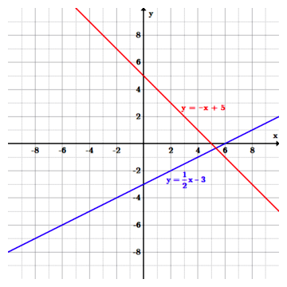The blue line, $y=\frac{1}{2}x-3$ and the red line, $y=-x+5$ are both linear functions. The blue line has a positive slope of $\frac{1}{2}$ and a $y$ -intercept of $-3$ ; the red line has a negative slope of $-1$ and a $y$ -intercept of $5$ .
Vertical lines have an undefined slope, and cannot be represented in the form $y=mx+b$ , but instead as an equation of the form $x=c$ for a constant $c$ , because the vertical line intersects a value on the $x$ -axis, $c$ . For example, the graph of the equation $x=4$ includes the same input value of $4$ for all points on the line, but would have different output values, such as $(4,-2),(4,0),(4,1),(4,5),$ etcetera. Vertical lines are NOT functions, however, since each input is related to more than one output.
Horizontal lines have a slope of zero and is represented by the form, $y=b$ , where $b$ is the $y$ -intercept. A graph of the equation $y=6$ includes the same output value of 6 for all input values on the line, such as $(-2,6),(0,6),(2,6),(6,6)$ , etcetera. Horizontal lines ARE functions because the relation (set of points) has the characteristic that each input is related to exactly one output.
Slope describes the direction and steepness of a line, and can be calculated given two points on the line.
Calculate the slope of a line using "rise over run" and identify the role of slope in a linear equation
In mathematics, the slope of a line is a number that describes both the direction and the steepness of the line. Slope is often denoted by the letter $m$ . Recall the slop-intercept form of a line, $y = mx + b$ . Putting the equation of a line into this form gives you the slope ($m$ ) of a line, and its $y$ -intercept ($b$ ). We will now discuss the interpretation of $m$ , and how to calculate $m$ for a given line.
The direction of a line is either increasing, decreasing, horizontal or vertical. A line is increasing if it goes up from left to right which implies that the slope is positive ($m > 0$ ). A line is decreasing if it goes down from left to right and the slope is negative ($m < 0$ ) . If a line is horizontal the slope is zero and is a constant function ($y=c$ ). If a line is vertical the slope is undefined.
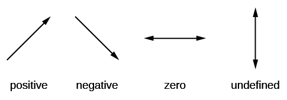The slope of a line can be positive, negative, zero, or undefined.
The steepness, or incline, of a line is measured by the absolute value of the slope. A slope with a greater absolute value indicates a steeper line. In other words, a line with a slope of $-9$ is steeper than a line with a slope of $7$ .
Slope is calculated by finding the ratio of the "vertical change" to the "horizontal change" between any two distinct points on a line. This ratio is represented by a quotient ("rise over run"), and gives the same number for any two distinct points on the same line. It is represented by $m = \frac{rise}{run}$ .$$
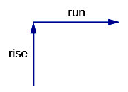The slope of a line is calculated as "rise over run."
Mathematically, the slope m of the line is:
$\displaystyle m = \frac{y_{2} - y_{1}}{x_{2} - x_{1}}$
Two points on the line are required to find $m$ . Given two points $(x_1, y_1)$ and $(x_2, y_2)$ , take a look at the graph below and note how the "rise" of slope is given by the difference in the $y$ -values of the two points, and the "run" is given by the difference in the $x$ -values.
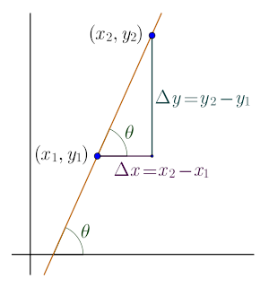The slope $m =\frac{y_{2} - y_{1}}{x_{2} - x_{1}}$ is calculated from the two points $\left( x_1,y_1 \right)$ and $\left( x_2,y_2 \right)$ .
Now we’ll look at some graphs on a coordinate grid to find their slopes. In many cases, we can find slope by simply counting out the rise and the run. We start by locating two points on the line. If possible, we try to choose points with coordinates that are integers to make our calculations easier.
Find the slope of the line shown on the coordinate plane below.
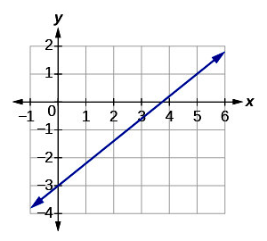Notice the line is increasing so make sure to look for a slope that is positive.
Locate two points on the graph, choosing points whose coordinates are integers. We will use $(0, -3)$ and $(5, 1)$ . Starting with the point on the left, $(0, -3)$ , sketch a right triangle, going from the first point to the second point, $(5, 1)$ .
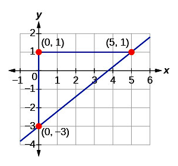Draw a triangle to help identify the rise and run.
Count the rise on the vertical leg of the triangle: $4$ units.
Count the run on the horizontal leg of the triangle: $5$ units.
Use the slope formula to take the ratio of rise over run:
The slope of the line is $\frac{4}{5}$ . Notice that the slope is positive since the line slants upward from left to right.
Find the slope of the line shown on the coordinate plane below.
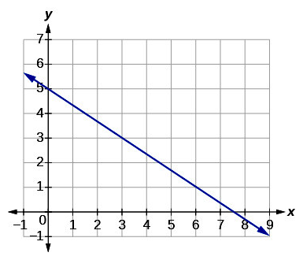We can see the slope is decreasing, so be sure to look for a negative slope.
Locate two points on the graph. Look for points with coordinates that are integers. We can choose any points, but we will use $(0, 5)$ and $(3, 3)$ .
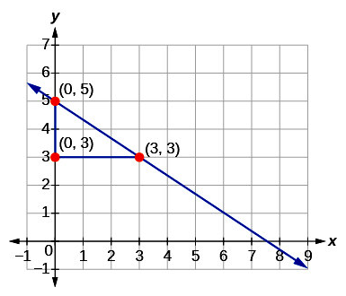The points $(0, 5)$ and $(3, 3)$ are on the line.
Apply the formula for slope:
$\displaystyle m =\frac{y_{2} - y_{1}}{x_{2} - x_{1}}$
Let $(x_1, y_1)$ be the point $(0, 5)$ , and $(x_2, y_2)$ be the point $(3, 3)$ .
Plugging the corresponding values into the slope formula, we get:
The slope of the line is $- \frac{2}{3}$ . Notice that the slope is negative since the line slants downward from left to right.
Two variables in direct variation have a linear relationship, while variables in inverse variation do not.
Recognize examples of functions that vary directly and inversely
Simply put, two variables are in direct variation when the same thing that happens to one variable happens to the other. If $x$ and $y$ are in direct variation, and $x$ is doubled, then $y$ would also be doubled. The two variables may be considered directly proportional.
For example, a toothbrush costs $2$ dollars. Purchasing $5$ toothbrushes would cost $10$ dollars, and purchasing $10$ toothbrushes would $20$ cost dollars. Thus we can say that the cost varies directly as the value of toothbrushes.
Direct variation is represented by a linear equation, and can be modeled by graphing a line. Since we know that the relationship between two values is constant, we can give their relationship with:
Where $k$ is a constant.
Rewriting this equation by multiplying both sides by $x$ yields:
Notice that this is a linear equation in slope-intercept form, where the $y$ -intercept $b$ is equal to $0$ .
Thus, any line passing through the origin represents a direct variation between $x$ and $y$ :
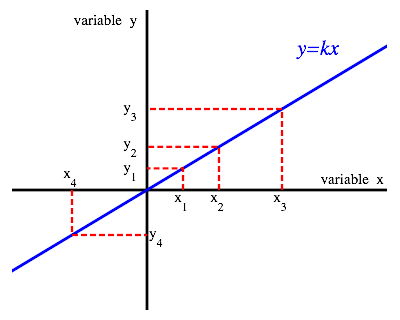The graph of $y = kx$ demonstrates an example of direct variation between two variables.
Revisiting the example with toothbrushes and dollars, we can define the $x$ -axis as number of toothbrushes and the $y$ -axis as number of dollars. Doing so, the variables would abide by the relationship:
Any augmentation of one variable would lead to an equal augmentation of the other. For example, doubling $y$ would result in the doubling of $x$ .
Inverse variation is the opposite of direct variation. In the case of inverse variation, the increase of one variable leads to the decrease of another. In fact, two variables are said to be inversely proportional when an operation of change is performed on one variable and the opposite happens to the other. For example, if $x$ and $y$ are inversely proportional, if $x$ is doubled, then $y$ is halved.
As an example, the time taken for a journey is inversely proportional to the speed of travel. If your car travels at a greater speed, the journey to your destination will be shorter.
Knowing that the relationship between the two variables is constant, we can show that their relationship is:
Where $k$ is a constant known as the constant of proportionality. Note that as long as $k$ is not equal to $0$ , neither $x$ nor $y$ can ever equal $0$ either. We can rearrange the above equation to place the variables on opposite sides:
Notice that this is not a linear equation. It is impossible to put it in slope-intercept form. Thus, an inverse relationship cannot be represented by a line with constant slope. Inverse variation can be illustrated with a graph in the shape of a hyperbola, pictured below.
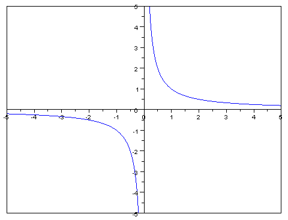An inversely proportional relationship between two variables is represented graphically by a hyperbola.
A zero, or $x$ -intercept, is the point at which a linear function's value will equal zero.
Practice finding the zeros of linear functions
The graph of a linear function is a straight line. Graphically, where the line crosses the $x$ -axis, is called a zero, or root. Algebraically, a zero is an $x$ value at which the function of $x$ is equal to $0$ . Linear functions can have none, one, or infinitely many zeros. If there is a horizontal line through any point on the $y$ -axis, other than at zero, there are no zeros, since the line will never cross the $x$ -axis. If the horizontal line overlaps the $x$ -axis, (goes through the $y$ -axis at zero) then there are infinitely many zeros, since the line intersects the $x$ -axis multiple times. Finally, if the line is vertical or has a slope, then there will be only one zero.
Zeros can be observed graphically. An $x$ -intercept, or zero, is a property of many functions. Because the $x$ -intercept (zero) is a point at which the function crosses the $x$ -axis, it will have the value $(x,0)$ , where $x$ is the zero.
All lines, with a value for the slope, will have one zero. To find the zero of a linear function, simply find the point where the line crosses the $x$ -axis.
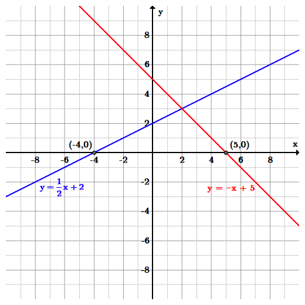The blue line, $y=\frac{1}{2}x+2$ , has a zero at $(-4,0)$ ; the red line, $y=-x+5$ , has a zero at $(5,0)$ . Since each line has a value for the slope, each line has exactly one zero.
To find the zero of a linear function algebraically, set $y=0$ and solve for $x$ .
The zero from solving the linear function above graphically must match solving the same function algebraically.
First, substitute $0$ for $y$ :
$\displaystyle 0=\frac{1}{2}x+2$
Next, solve for $x$ . Subtract $2$ and then multiply by $2$ , to obtain:
$\displaystyle \begin{align} \frac{1}{2}x&=-2\\ x&=-4 \end{align}$
The zero is $(-4,0)$ . This is the same zero that was found using the graphing method.
The slope-intercept form of a line summarizes the information necessary to quickly construct its graph.
Convert linear equations to slope-intercept form and explain why it is useful
One of the most common representations for a line is with the slope-intercept form. Such an equation is given by $y=mx+b$ , where $x$ and $y$ are variables and $m$ and $b$ are constants. When written in this form, the constant $m$ is the value of the slope and $b$ is the $y$ -intercept. Note that if $m$ is $0$ , then $y=b$ represents a horizontal line. Note that this equation does not allow for vertical lines, since that would require that $m$ be infinite (undefined). However, a vertical line is defined by the equation $x=c$ for some constant $c$ .
Writing an equation in slope-intercept form is valuable since from the form it is easy to identify the slope and $y$ -intercept. This assists in finding solutions to various problems, such as graphing, comparing two lines to determine if they are parallel or perpendicular and solving a system of equations.
Let's write an equation in slope-intercept form with $m=-\frac{2}{3}$ , and $b=3$ . Simply substitute the values into the slope-intercept form to obtain:
If an equation is not in slope-intercept form, solve for $y$ and rewrite the equation.
Let's write the equation $3x+2y=-4$ in slope-intercept form and identify the slope and $y$ -intercept. To solve the equation for $y$ , first subtract $3x$ from both sides of the equation to get:
Then divide both sides of the equation by $2$ to obtain:
Which simplifies to $y=-\frac{3}{2}x-2$ . Now that the equation is in slope-intercept form, we see that the slope $m=-\frac{3}{2}$ , and the $y$ -intercept $b=-2$ .
We begin by constructing the graph of the equation in the previous example.
We construct the graph the line $y=-\frac{3}{2}x-2$ using the slope-intercept method. We begin by plotting the $y$ -intercept $b=-2$ , whose coordinates are $(0,-2)$ . The value of the slope dictates where to place the next point.
Since the value of the slope is $\frac{-3}{2}$ , the rise is $-3$ and the run is $2$ . This means that from the $y$ -intercept, $(0,-2)$ , move $3$ units down, and move $2$ units right. Thus we arrive at the point $(2,-5)$ on the line. If the negative sign is placed with the denominator instead the slope would be written as $\frac{3}{-2}$ , we can instead move up $3$ units and left $2$ units from the $y$ -intercept to arrive at the point $(-2,1)$ , also on the line.
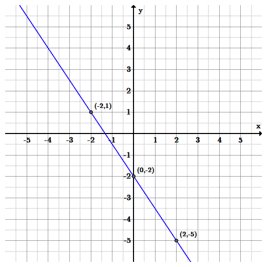Graph of the line $y=-\frac{3}{2}x-2$ .
Let's graph the equation $12x-6y-6=0$ . First we solve the equation for $y$ by subtracting $12x$ to obtain:
$\displaystyle -6y-6=-12x$
Next, add $6$ to get:
$\displaystyle -6y=-12x+6$
Finally, divide all terms by $-6$ to get the slope-intercept form:
$\displaystyle y=2x-1$
The slope is $2$ , and the $y$ -intercept is $-1$ . Using this information, graphing is easy. Start by plotting the $y$ -intercept $(0,-1)$ , then use the value of the slope, $\frac{2}{1}$ , to move up $2$ units and right $1$ unit.
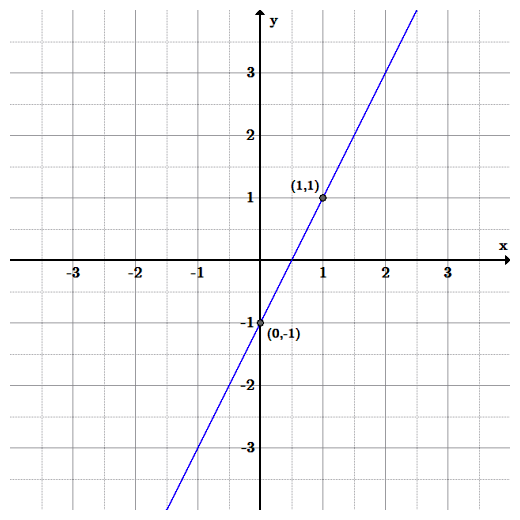Graph of the line $y=2x-1$ .
The point-slope equation is another way to represent a line; only the slope and a single point are needed.
Use point-slope form to find the equation of a line passing through two points and verify that it is equivalent to the slope-intercept form of the equation
The point-slope equation is a way of describing the equation of a line. The point-slope form is ideal if you are given the slope and only one point, or if you are given two points and do not know what the $y$ -intercept is. Given a slope, $m$ , and a point $(x_{1}, y_{1})$ , the point-slope equation is:
$\displaystyle y-y_{1}=m(x-x_{1})$
To show that these two equations are equivalent, choose a generic point $(x_{1}, y_{1})$ . Plug in the generic point into the equation $y=mx+b$ . The equation is now, $y_{1}=mx_{1}+b$ , giving us the ordered pair,$(x_{1}, mx_{1}+b)$ . Then plug this point into the point-slope equation and solve for $y$ to get:
Distribute the negative sign through and distribute $m$ through $(x-x_{1})$ :
Add $mx_{1}$ to both sides:
Combine like terms:
Add $b$ to both sides:
Combine like terms:
Therefore, the two equations are equivalent and either one can express an equation of a line depending on what information is given in the problem or what type of equation is requested in the problem.
Write the equation of the line in point-slope form:
To switch this equation into slope-intercept form, solve the equation for $y$ :
$\displaystyle y-1=-4(x-2)$
Distribute $-4$ :
$\displaystyle y-1=-4x+8$
Add $1$ to both sides:
The equation has the same meaning whichever form it is in, and produces the same graph.
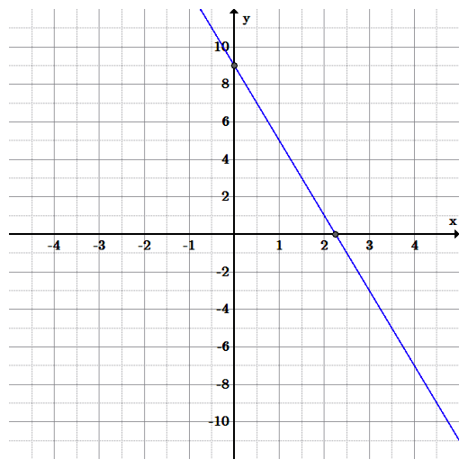Graph of the line $y-1=-4(x-2)$ , through the point $(2,1)$ with slope of $-4$ , as well as the slope-intercept form, $y=-4x+9$ .
Since we have two points, but no slope, we must first find the slope:
$\displaystyle m=\frac{y_{2}-y_{1}}{x_{2}-x_{1}}$
Substituting the values of the points:
$\displaystyle \begin{align} m&=\frac{-2-6}{1-(-3)}\\&=\frac{-8}{4}\\&=-2 \end{align}$
Now choose either of the two points, such as $(-3,6)$ . Plug this point and the calculated slope into the point-slope equation to get:
$\displaystyle y-6=-2[x-(-3)]$
Be careful if one of the coordinates is a negative. Distributing the negative sign through the parentheses, the final equation is:
If you chose the other point, the equation would be: $y+2=-2(x-1)$ and either answer is correct.
Next distribute $-2$ :
$\displaystyle y-6=-2x-6$
Add $6$ to both sides:
Again, the two forms of the equations are equivalent to each other and produce the same line. The only difference is the form that they are written in.
A linear equation written in standard form makes it easy to calculate the zero, or $x$ -intercept, of the equation.
Explain the process and usefulness of converting linear equations to standard form
Standard form is another way of arranging a linear equation. In the standard form, a linear equation is written as:
$\displaystyle Ax + By = C $
where $A$ and $B$ are both not equal to zero. The equation is usually written so that $A \geq 0$ , by convention. The graph of the equation is a straight line, and every straight line can be represented by an equation in the standard form.
For example, consider an equation in slope-intercept form: $y = -12x +5$ . In order to write this in standard form, note that we must move the term containing $x$ to the left side of the equation. We add $12x$ to both sides:
The equation is now in standard form.
Recall that a zero is a point at which a function's value will be equal to zero ($y=0$ ), and is the $x$ -intercept of the function. We know that the y-intercept of a linear equation can easily be found by putting the equation in slope-intercept form. However, the zero of the equation is not immediately obvious when the linear equation is in this form. However, the zero, or $x$ -intercept of a linear equation can easily be found by putting it into standard form.
For a linear equation in standard form, if $A$ is nonzero, then the $x$ -intercept occurs at $x = \frac{C}{A}$ .
For example, consider the equation $y + 12x = 5$ .
In this equation, the value of $A$ is 1, and the value of $C$ is 5. Therefore, the zero of the equation occurs at $x = \frac{5}{1} = 5$ . The zero is the point $(5, 0)$ .
Note that the $y$ -intercept and slope can also be calculated using the coefficients and constant of the standard form equation. If $B$ is non-zero, then the y-intercept, that is the y-coordinate of the point where the graph crosses the y-axis (where $x$ is zero), is $\frac{C}{B}$ , and the slope of the line is $-\frac{A}{B}$ .
We must write the equation in standard form, $Ax + By = C$ , which means getting the $x$ and $y$ terms on the left side, and the constants on the right side of the equation.
Distribute the 3 on the left side:
Add 6 to both sides:
Subtract $\frac{1}{4}x$ from both sides:
The equation is in standard form, and we can substitute the values for $A$ and $C$ into the formula for the zero:
The zero is $(3, 0)$ .
The distance and the midpoint formulas give us the tools to find important information about two points.
Calculate the midpoint of a line segment and the distance between two points on a plane
In analytic geometry, the distance between two points of the $xy$ -plane can be found using the distance formula. The distance can be from two points on a line or from two points on a line segment. The distance between points $(x_{1},y_{1})$ and $(x_{2},y_{2})$ is given by the formula:
This formula is easily derived by constructing a right triangle with the hypotenuse connecting the two points ($c$ ) and two legs drawn from the each of the two points to intersect each other ($a$ and $b$ ), (see image below) and applying the Pythagorean theorem. This theorem states that in any right triangle, the square of the hypotenuse is equal to the sum of the squares of the other two sides .
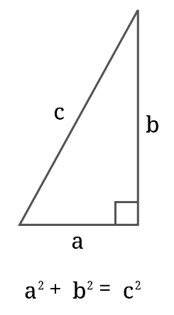The Pythagorean Theorem states that the square of the hypotenuse is equal to the sum of the squares of the other two sides.
The image below names the two points, with the distance between them as the variable, $d$ . Notice that the length between each point and the triangle's right angle is found by calculating the difference between the $y$ -coordinates and $x$ -coordinates, respectively. The distance formula includes the lengths of the legs of the triangle (normally labeled $a$ and $b$ ), with the expressions $(y_{2}-y_{1})$ and $(x_{2}-x_{1})$ .
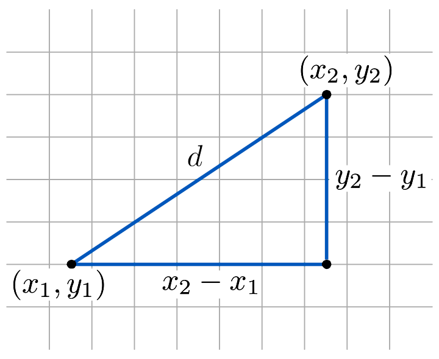The distance formula between two points, $(x_{1},y_{1})$ and $(x_{2},y_{2})$ , shown as the hypotenuse of a right triangle
Substitute the values into the distance formula that is derived from the Pythagorean Theorem:
In geometry, the midpoint is the middle point of a line segment, or the middle point of two points on a line, and thus is equidistant from both end-points. If you have two points, $(x_{1},y_{1})$ and $(x_{2},y_{2})$ , the midpoint of the segment connecting the two points can be found with the formula:
Another way to interpret this formula is an average: we average the $x$ -coordinates to find the $x$ -coordinate of the midpoint, and we average the $y$ -coordinates to find the $y$ -coordinate of the midpoint.
By looking at each coordinate, you can see that the $x$ -coordinate is halfway between $x_{1}$ and $x_{2}$ , and the $y$ -coordinate is halfway between $y_{1}$ and $y_{2}$ .
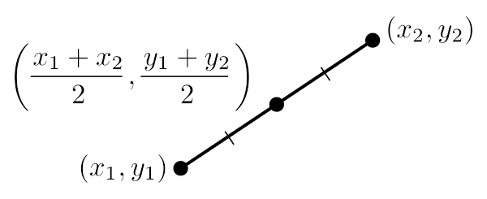The equation for a midpoint of a line segment with endpoints $(x_{1},y_{1})$ and $(x_{2},y_{2})$
Substitute the values into the midpoint formula:
Parallel lines never intersect; perpendicular lines intersect at right angles.
Practice finding equations for lines that are parallel and lines that are perpendicular
Two lines in a plane that do not intersect or touch at a point are called parallel lines. The parallel symbol is $\parallel$ .
For example, given two lines: $f(x)=m_{1}x+b_{1}$ and $g(x)=m_{2}x+b_{2}$ , writing $f(x)$$\parallel$$g(x)$ states that the two lines are parallel to each other. In 2D, two lines are parallel if they have the same slope.
Given two parallel lines $f(x)$ and $g(x)$ , the following is true:
Recall that the slope-intercept form of an equation is: $y=mx+b$ and the point-slope form of an equation is: $y-y_{1}=m(x-x_{1})$ , both contain information about the slope, namely the constant $m$ . If two lines, say $f(x)=mx+b$ and $g(x)=nx+c$ , are parallel, then $n$ must equal $m$ .
For example, in the graph below, $f(x)=2x+3$ and $g(x)=2x-1$ are parallel since they have the same slope, $m=2$ .
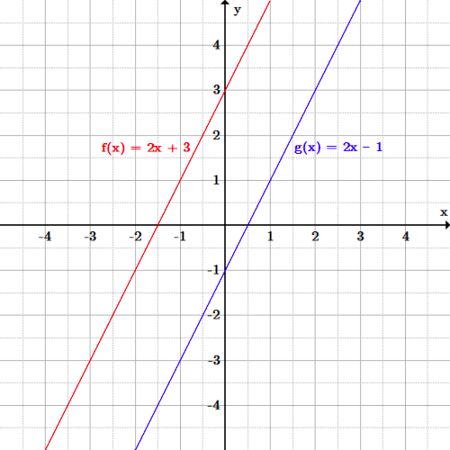$f(x)=2x+3$ in red is parallel to $g(x)=2x-1$ in blue; the slopes obtained from the graphs of the lines is the same as the slopes in their equations.
Two lines are perpendicular to each other if they form congruent adjacent angles. In other words, they are perpendicular if the angles at their intersection are right angles, $90$ degrees . The perpendicular symbol is $\perp$ .
For example given two lines, $f(x)=m_{1}x+b_{1}$ and $g(x)=m_{2}x+b_{2}$ , writing$f(x)\perp g(x)$ states that the two lines are perpendicular to each other.
For two lines in a 2D plane to be perpendicular, their slopes must be negative reciprocals of one another, or the product of their slopes must equal $-1$ . This means that if the slope of one line is $m$ , then the slope of its perpendicular line is $\frac{-1}{m}$ . The two slopes multiplied together must equal $-1$ . However, this method cannot be used if the slope is zero or undefined (the line is parallel to an axis).
Given two lines: $f(x)=3x-2$ and $g(x)=\frac{-1}{3}x+1$ , note the values of the slopes. Since $3$ is the negative reciprocal of $-\frac{1}{3}$ , the two lines are perpendicular. Also, the product of the slopes equals $-1$ .
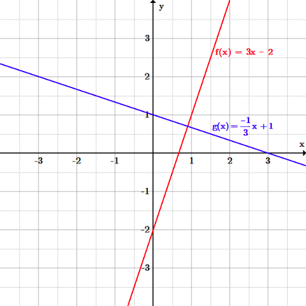The line $f(x)=3x-2$ in red is perpendicular to line $g(x)=\frac{-1}{3}x+1$ in blue. The values of their slopes are negative reciprocals of each other; therefore, the angle of intersection is $90$ degrees.
Start with the equation for slope-intercept form and then substitute the values for the slope and the point, and solve for $b$ : $y=mx+b$ . The value of the slope will be equal to the current line, since the new line is parallel to it. The point $(-1,1)$ is substituted for $(x,y)$ .
Therefore, the equation of the line has a slope ($m$ ) of $-2$ and a $y$ -intercept ($b$ ) of $-1$ . The equation is $y=-2x-1$ .
Again, start with the slope-intercept form and substitute the values, except the value for the slope will be the negative reciprocal. The negative reciprocal of $\frac{1}{4}$ is $-4$ . Therefore, the new equation has a slope of $-4$ , through the point $(2,4)$ . Solve for $b$ .
Therefore, the equation of the line perpendicular to the given line has a slope of $-4$ and a $y$ -intercept of $12$ . The equation is $y=-4x+12$ .
A linear inequality is an expression that is designated as less than, greater than, less than or equal to, or greater than or equal to.
Solve problems involving linear inequalities
When two linear expressions are not equal, but are designated as less than ($<$ ), greater than ($>$ ), less than or equal to ($\leq$ ) or greater than or equal to ($\geq$ ), it is called a linear inequality. A linear inequality looks exactly like a linear equation, with the inequality sign replacing the equality sign.
For inequalities that contain variable expressions, you may be asked to solve the inequality for that variable. This just means that you need to find the values of the variable that make the inequality true.
A linear inequality looks like a linear equation, with the inequality sign replacing the equal sign. The same properties for solving an equation are used to solve an inequality; however, when solving an equation there is one solution (or one value that makes the equation true), but when solving an inequality there are many solutions (or values that make the statement true).
The solutions to this inequality includes every number that is greater than $4$ as shown below.
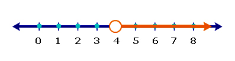Solutions to $x>4$ are graphed in yellow on the number line. Notice the open circle means that the value of $4$ in not a solution to the inequality since $4>4$ is a false statement. If the inequality was $x\geq 4$ , then $4$ would be a solution and there would be a closed circle over the $4$ on the number line.
Solving the inequality is the same as solving an equation. There is only one rule that is different: When you multiply or divide each side of an inequality by a negative number, you must reverse the inequality symbol to maintain a true statement.
Step 1, combine like terms on each side of the inequality symbol:
Step 2, since there is a variable on both sides of the inequality, choose to move the $-4x$ , to combine the variables on the left hand side of the inequality.
Adding $4x$ yields:
$\displaystyle -2x+3\leq-9$
Step 3, this is similar to solving a two step equation. Subtract $3$ :
$\displaystyle -2x\leq-12$
Finally, divide both sides by $-2$ (remember to reverse the inequality symbol):
$\displaystyle x\ge 6$
To read this answer, read from right to left, $x\geq6$ . This reads "$x$ is greater than or equal to 6".
Linear functions apply to real world problems that involve a constant rate.
Apply linear equations to solve problems about rates of change
Linear equations often include a rate of change. For example, the rate at which distance changes over time is called velocity. If two points in time and the total distance traveled is known the rate of change, also known as slope, can be determined. From this information, a linear equation can be written and then predictions can be made from the equation of the line.
If the unit or quantity in respect to which something is changing is not specified, usually the rate is per unit of time. The most common type of rate is "per unit of time", such as speed, heart rate and flux. Ratios that have a non-time denominator include exchange rates, literacy rates, and electric field (in volts/meter).
In describing the units of a rate, the word "per" is used to separate the units of the two measurements used to calculate the rate (for example a heart rate is expressed "beats per minute").
An athlete begins he normal practice for the next marathon during the evening. At 6:00 pm he starts to run and leaves his home. At 7:30 pm, the athlete finishes the run at home and has run a total of 7.5 miles. How fast was his average speed over the course of the run?
The rate of change is the speed of his run; distance over time. Therefore, the two variables are time $(x)$ and distance $(y)$ . The first point is at his house, where his watch read 6:00 pm. This is the beginning time so let's set it to $0$ . So our first point is $(0,0)$ because he did not run anywhere yet. Let's think about our time in hours. Our second point is $1.5$ hours later, and we ran $7.5$ miles. The second point is $(1.5,7.5)$ . Our speed (rate of change) is simply the slope of the line connecting the two points. The slope, given by: $m = \frac{y_{2}-y_{1}}{x_{2}-x_{1}}$ becomes $m = \frac{7.5}{1.5}=5 $ miles per hour.
To graph this line, we need the $y$ -intercept and the slope to write the equation. The slope was $5$ miles per hour and since the starting point was at $(0,0)$ , the $y$ -intercept is $0$ . So our final function is $y=5x$ .
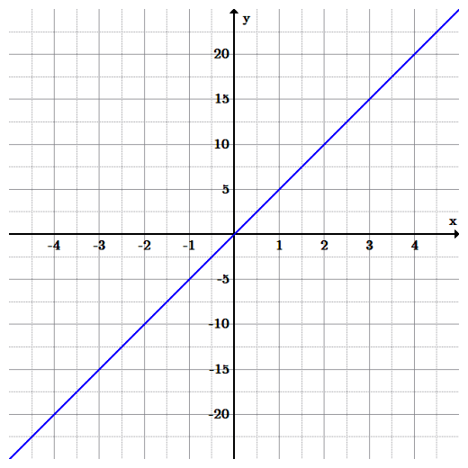The graph of $y=5x$ . The two variables are time $(x)$ and distance $(y)$ . The rate the runner runs is $5$ miles per hour. Using the graph, predictions can be made assuming that his average speed remains the same.
With this new function, we can now answer some more questions.
There are many such applications for linear equations. Anything that involves a constant rate of change can be nicely represented with a line with the slope. Indeed, so long as you have just two points, if you know the function is linear, you can graph it and begin asking questions! Just make sure what you're asking and graphing makes sense. For instance, in the marathon example, the domain is really only $x\geq0$ , since it doesn't make sense to go into negative time and lose miles!
Linear mathematical models describe real world applications with lines.
Apply linear mathematical models to real world problems
A mathematical model is a description of a system using mathematical concepts and language. Mathematical models are used not only in the natural sciences and engineering disciplines, but also in the social sciences. Linear modeling can include population change, telephone call charges, the cost of renting a bike, weight management, or fundraising. A linear model includes the rate of change $(m)$ and the initial amount, the y-intercept $b$ . After the model is written and a graph of the line is made, either one can be used to make predictions about behaviors.
Many everyday activities require the use of mathematical models, perhaps unconsciously. One difficulty with mathematical models lies in translating the real world application into an accurate mathematical representation.
A rental company charges a flat fee of $\$30$ and an additional $\$0.25$ per mile to rent a moving van. Write a linear equation to approximate the cost $y$ (in dollars) in terms of $x$ , the number of miles driven. How much would a 75 mile trip cost?
Using the slope-intercept form of a linear equation, with the total cost labeled $y$ (dependent variable) and the miles labeled $x$ (independent variable):
The total cost is equal to the rate per mile times the number of miles driven plus the cost for the flat fee:
$\displaystyle y=0.25x+30$
To calculate the cost of a $75 $ mile trip, substitute $75$ for $x$ into the equation:
$\displaystyle \begin{align} y&=0.25x+30\\ &=0.25(75)+30\\ &=18.75+30\\ &=48.75 \end{align}$
It's also possible to model multiple lines and their equations.
Initially, trains A and B are $325$ miles away from each other. Train A is traveling towards B at $50$ miles per hour and train B is traveling towards A at $80$ miles per hour. At what time will the two trains meet? At this time how far did the trains travel?
First, begin with the starting positions of the trains, ($y$ -intercepts, $b$ ). Train A starts are the origin, $(0,0)$ . Since train B is $325$ miles away from train A initially, its position is $(0,325)$ .
Second, in order to write the equations representing each train's total distance in terms of time, calculate the rate of change for each train. Since train A is traveling towards train B, which has a greater $y$ value, train A's rate of change must be positive and equal to its speed of $50$ . Train B is traveling towards A, which has a lesser $y$ value, giving B a negative rate of change: $-80$ .
The two lines are thus:
And:
The two trains will meet where the two lines intersect. To find where the two lines intersect set the equations equal to each other and solve for $x$ :
$\displaystyle y_{A}=y_{B}$
Solving for $x$ gives:
$\displaystyle x=2.5$
The two trains meet after $2.5$ hours. To find where this is, plug $2.5$ into either equation.
Plugging it into the first equation gives us $50(2.5)=125$ , which means it meets after A travels $125$ miles.
Here is the distance versus time graphic model of the two trains:
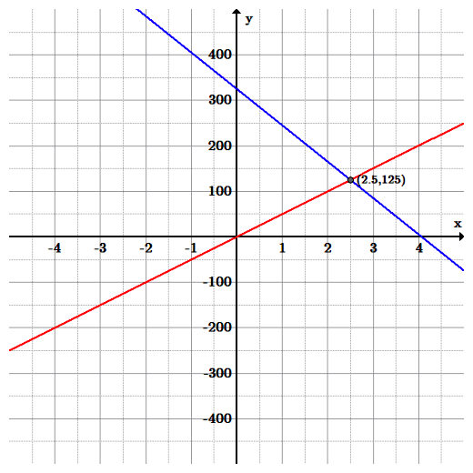Train A (red line) is represented by the equation: $y=50x$ , and Train B (blue line) is represented by the equation: $y=-80x+325$ . The two trains meet at the intersections point $(2.5,125)$ , which is after $125$ miles in $2.5$ hours.
Curve fitting with a line attempts to draw a line so that it "best fits" all of the data.
Use the least squares regression formula to calculate the line of best fit for a set of points
Curve fitting is the process of constructing a curve, or mathematical function, that has the best fit to a series of data points, possibly subject to constraints. Curve fitting can involve either interpolation, where an exact fit to the data is required, or smoothing, in which a "smooth" function is constructed that approximately fits the data. Fitted curves can be used as an aid for data visualization, to infer values of a function where no data are available, and to summarize the relationships among two or more variables. Extrapolation refers to the use of a fitted curve beyond the range of the observed data, and is subject to a greater degree of uncertainty since it may reflect the method used to construct the curve as much as it reflects the observed data.
In this section, we will only be fitting lines to data points, but it should be noted that one can fit polynomial functions, circles, piece-wise functions, and any number of functions to data and it is a heavily used topic in statistics.
Linear regression is an approach to modeling the linear relationship between a dependent variable, $y$ and an independent variable, $x$ . With linear regression, a line in slope-intercept form, $y=mx+b$ is found that "best fits" the data.
The simplest and perhaps most common linear regression model is the ordinary least squares approximation. This approximation attempts to minimize the sums of the squared distance between the line and every point.
To find the slope of the line of best fit, calculate in the following steps:
To find the $y$ -intercept ($b$ ) , calculate using the following steps:
Using these values of $m$ and $b$ we now have a line that approximates the points on the graph.
For $n=8$ points: $(-1,0),(0,0),(1,1),(2,2),(3,1),(4,2.5),(5,3) $ and $(6,4)$ .
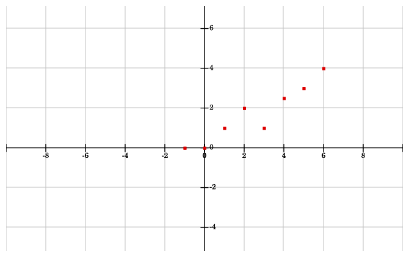The points are graphed in a scatterplot fashion.
First, find the slope $(m)$ and $y$ -intercept $(b)$ that best approximate this data, using the equations from the prior section:
To find the slope, calculate:
4. Calculate the numerator: The product of the $x$ and $y$ -coordinates minus one-eighth the product of the sum of the $x$ -coordinates and the sum of the $y$ -coordinates:
The numerator in the slope equation is:
$\displaystyle 57-\frac{1}{8}(20)(13.5)=23.25$
5. Calculate the denominator: The sum of the squares of the $x$ -coordinates minus one-eighth the sum of the $x$ -coordinates squared:
$\displaystyle \sum_{i=1}^{n}(x_{i}^{2})-\frac{1}{n}(\sum_{i=1}^{n}x_{i})^{2}$
The denominator is $92-\frac{1}{8}(20)^{2}=92-50=42$ and the slope is the quotient of the numerator and denominator: $\frac{23.25}{42}\approx0.554.$
Now for the $y$ -intercept, ($b$ ) one-eighth times the average of the $$$x$ -coordinates: $\bar{x}=\frac{20}{8}=2.5$ and one-eighth times the average of the $y$ -coordinates: $\bar{y}=\frac{13.5}{8}=1.6875$ .
Therefore $b=\frac{1}{n} \sum_{i=1}^{n} y_{1} - m \frac{1}{n} \sum_{i=1}^{n} x_{i} \\$ :
$\displaystyle b\approx1.6875-0.554(2.5)=0.3025.$
Our final equation is therefore $y=0.554x+0.3025$ , and this line is graphed along with the points.
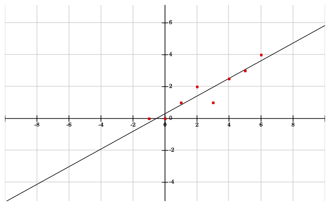The line found by the least squares approximation, $y = 0.554x+0.3025$ . Notice 4 points are above the line, and 4 points are below the line.
If we have a point that is far away from the approximating line, then it will skew the results and make the line much worse. For instance, let's say in our original example, instead of the point $(-1,0)$ we have $(-1,6)$ .
Using the same calculations as above with the new point, the results are:$m\approx0.0536$ and $b\approx2.3035$ , to get the new equation $y=0.0536x+2.3035$ .
Looking at the points and line in the new figure below, this new line does not fit the data well, due to the outlier $(-1,6)$ . Indeed, trying to fit linear models to data that is quadratic, cubic, or anything non-linear, or data with many outliers or errors can result in bad approximations.
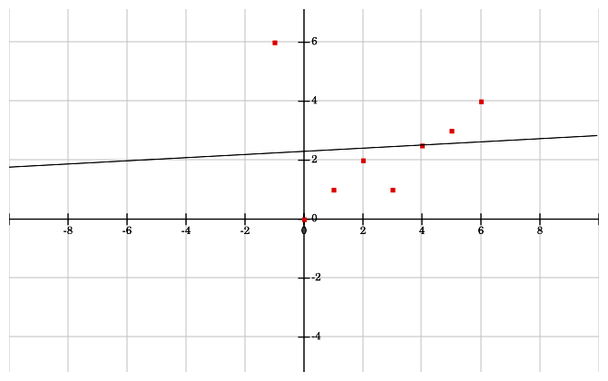Here is the approximated line given the new outlier point at (-1, 6).
{kind=link}
{kind=link}
{kind=link}
{kind=link}
{kind=link}
{kind=link}
{kind=link}
{kind=link}
{kind=link}
{kind=link}
{kind=link}
{kind=link}
{kind=link}
{kind=link}
{kind=link}
{kind=link}
{kind=link}
{kind=link}
{kind=link}
{kind=link}
{kind=link}
{kind=link}
{kind=link}
{kind=link}
{kind=link}